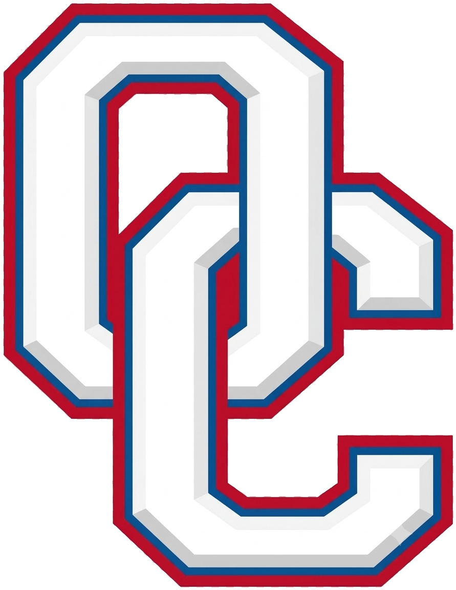

Everything OCSS teachers and leaders need to write, submit, and score growth measures for the 2026–27 GaLEADS ELEVATE cycle — in one place.
Proficiency: By [date], [X% or number] will [target action], as measured by [data source]. No baseline needed.
Growth: By [date], [action] will increase/decrease from [baseline] to [target], as measured by [data source]. Baseline required.
Custom: your own words, 250 characters in eHub — held to the same checklist.
✓ Baseline is clear (growth goals)
✓ Target is a specific number
✓ Results available by end of Q3
✓ Goal stretches performance — ambitious AND attainable
Local data only — state assessment data may not be used.
| Exceeded (3) | 95%+ of target |
| Met (2) | 87–94% |
| Progressing (1) | 75–86% |
| Did Not Meet (0) | Below 75% |
Rated on progress toward the goal, not the raw result. Growth, not perfection, is the goal.